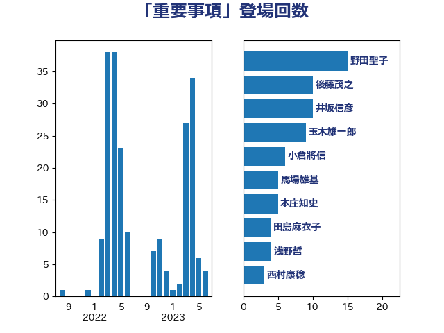

単語「重要事項」

| 野田聖子 | 自由民主党 | 15 回 |
| 後藤茂之 | 自由民主党 | 10 回 |
| 井坂信彦 | 立憲民主党 | 9 回 |
| 井上信治 | 自由民主党 | 5 回 |
| 本庄知史 | 立憲民主党 | 5 回 |
| 菅義偉 | 自由民主党 | 5 回 |
| 赤嶺政賢 | 日本共産党 | 5 回 |
| 馬場雄基 | 立憲民主党 | 5 回 |
| 加藤勝信 | 自由民主党 | 4 回 |
| 塩川鉄也 | 日本共産党 | 4 回 |
| 三木圭恵 | 日本維新の会 | 3 回 |
| 中野洋昌 | 公明党 | 3 回 |
| 末松信介 | 自由民主党 | 3 回 |
| 足立康史 | 日本維新の会 | 3 回 |
| 和田政宗 | 自由民主党 | 2 回 |
| 小西洋之 | 立憲民主党 | 2 回 |
| 後藤祐一 | 立憲民主党 | 2 回 |
| 松野博一 | 自由民主党 | 2 回 |
| 田村智子 | 日本共産党 | 2 回 |
| 石川博崇 | 公明党 | 2 回 |
| 若宮健嗣 | 自由民主党 | 2 回 |
| 藤井比早之 | 自由民主党 | 2 回 |
| 藤巻健太 | 日本維新の会 | 2 回 |
| 一谷勇一郎 | 日本維新の会 | 1 回 |
| 吉川沙織 | 立憲民主党 | 1 回 |
| 吉川赳 | 無所属 | 1 回 |
| 吉田統彦 | 立憲民主党 | 1 回 |
| 城井崇 | 立憲民主党 | 1 回 |
| 小林鷹之 | 自由民主党 | 1 回 |
| 小沼巧 | 立憲民主党 | 1 回 |
| 尾身朝子 | 自由民主党 | 1 回 |
| 山田勝彦 | 立憲民主党 | 1 回 |
| 山田宏 | 自由民主党 | 1 回 |
| 岡本あき子 | 立憲民主党 | 1 回 |
| 岸田文雄 | 自由民主党 | 1 回 |
| 川田龍平 | 立憲民主党 | 1 回 |
| 有村治子 | 自由民主党 | 1 回 |
| 柳ヶ瀬裕文 | 日本維新の会 | 1 回 |
| 江島潔 | 自由民主党 | 1 回 |
| 浜田聡 | NHK党 | 1 回 |
| 浜野喜史 | 国民民主党 | 1 回 |
| 浦野靖人 | 日本維新の会 | 1 回 |
| 湯原俊二 | 立憲民主党 | 1 回 |
| 田中英之 | 自由民主党 | 1 回 |
| 田島麻衣子 | 立憲民主党 | 1 回 |
| 田村憲久 | 自由民主党 | 1 回 |
| 福島みずほ | 社会民主党 | 1 回 |
| 篠原豪 | 立憲民主党 | 1 回 |
| 舩後靖彦 | れいわ新選組 | 1 回 |
| 菊田真紀子 | 立憲民主党 | 1 回 |
| 西村康稔 | 自由民主党 | 1 回 |
| 金子恭之 | 自由民主党 | 1 回 |